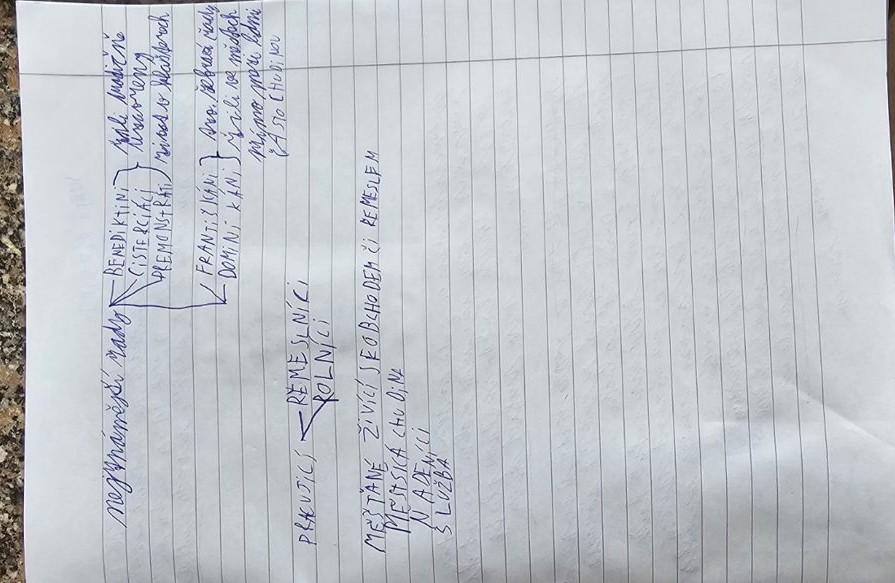

1054
Velké schizma – 1054
Roku 1054 se křesťanská církev rozešla na západní, římskokatolickou, a východní, pravoslavnou. Spory mezi Římem a Konstantinopolí ale trvaly už staletí předtím.
- 1054 Velké schizma: rozkol západní a východní církve
Co znamená schizma?
Schizma znamená rozkol nebo rozdělení. Východní a západní část křesťanského světa se po staletí odlišovaly zvyky, jazykem bohoslužeb a názorem na autoritu papeže.
Roku 1054 došlo k výraznému sporu mezi představiteli Říma a Konstantinopole. Datum se tradičně uvádí jako symbol rozdělení mezi římskokatolickou (západní) a pravoslavnou (východní) církev. Rozdělení bylo dlouhodobý proces, ne okamžitá změna všech komunit v jediném roce.
| Západ | Východ |
|---|---|
| Řím | Konstantinopol |
| Papež | Patriarchové, včetně konstantinopolského |
| Historicky převládala latina | Historicky významná byla řečtina |
| Katolická tradice | Pravoslavná tradice |
Paměťový obraz
- Dvě poloviny kostela: papež v Římě, patriarcha v Konstantinopoli, rok 1054.
Vyzkoušej se
Odpověz nahlas, teprve pak otevři odpověď. Procvičit náhodně
Co znamená velké schizma?
Rozkol západní (římskokatolické) a východní (pravoslavné) církve, tradičně roku 1054.
Kdo stál v čele západní a kdo východní církve?
Na západě papež v Římě, na východě patriarcha v Konstantinopoli.
Zápis ze sešitu
Fotky stránek sešitu
